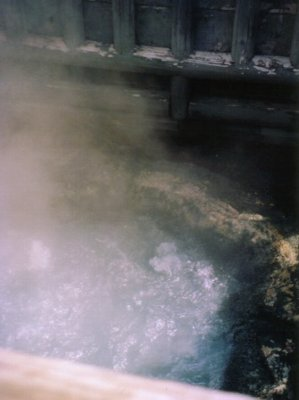
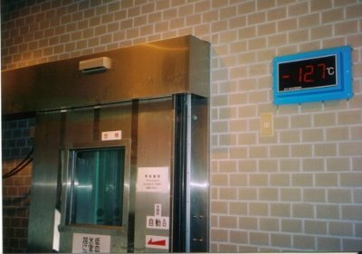
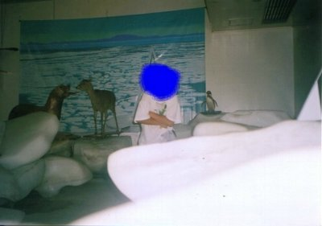
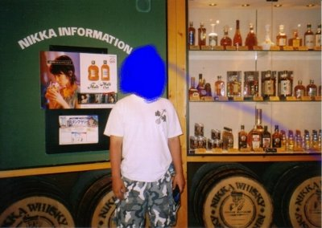
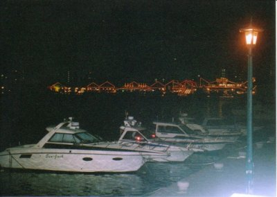

夏の北北海道ドライブ走破記 | 2005年夏 |
|---|---|
| 北海道は当たり前だけど広い。函館と宗谷岬には赴けていない。さてどうするか‥としていたところ、時間があるうちにいってしまおう！という無鉄砲な行動にでました。 結論を言いますと６日間で3600ｋｍ（静岡から）を観光しながら回るのは「大変」というもの。一応観光内容をまとめます。 ① 青森からフェリーで北海道へ渡航。渡航は２時間近くあったのだが、観光地図を手にどこまわろうかを思案中であった。眠りたい状態でもあった。静岡の高校野球の応援もしたかった（笑）。函館に着く。夕方なので観光の時間はない。洞爺湖方面を目指してひたすら走る。途中のコンビニでクワガタ（成虫）と出会い、旅のお供にする。 ② 洞爺湖の道の駅で就寝。車はほとんどいない。朝に気がつくとライダーがテントを張っていた。道の駅が開くまで霧の無い洞爺湖を周回する。 登別温泉に着く。風呂に入りたい！だが先に観光である。TVサスペンスでよくある風景を目の当たりにする。（写真：左下） | |
 TVサスペンスでよくある風景 |  間近でみる温泉 |
| 間近でみる温泉は凄みあり（写真：右上）。本地獄谷は奥まで車で行けるが、私はトレッキングを行う。車に乗りっぱなしじゃ体に悪いしね。 風呂に入るが泥風呂ではありませんでしたよ。残念。 ③ 今回は時間との勝負。登別から士別まで高速道路を使う。登別から札幌までは車線数が２から３本だったけど、士別付近になると１本に減っていた。このあたりになるとした道でも大差がないような気がする。夕暮れまでに宗谷岬に着きたかったが断念し就寝する。途中にスーパーに入り、野菜と水、酒を準備し、簡単なディナーをとる。 ④ 宗谷岬をめざして走る。途中に猿払村で休憩する。だだ広い敷地でキャンプが可能だ。みるところがいろいろあるのだが、私は地下道の壁絵を推薦したい。夜光塗料だと思いますがとてもメルヘンチィックできれいです（写真：左下）。写真とりは失敗（涙）。近場にきたら是非みるべしと考えます。 | |
 地下道の壁絵（に見えるかな？） |  これが最北端証明書 |
| ⑤ 宗谷岬は観光地。最北端の碑と証明書を発行する店、流氷会館、宗谷岬の丘の上は広い公園がある。流氷会館は流氷を保管する倉庫。マイナス12度。外では半袖でよかったけど中はかなり寒い（写真：下）。 | |
|  右上の温度計分かります？−１２℃ |  鹿と一緒に極寒の地 |
| ⑥ 余市のニッカウヰスキーで工場見学をする（写真：下）。試飲があるが脇の道の駅にて休憩すればよいだろう。道の駅には多数の方々が車中泊している。余市の道の駅に訪れればウイスキーの薫りにきづくはずです（しゃれぬきで）。 | |
 ニッカウヰスキー工場 |  お酒と私 |
| ⑦ 北海道といえば無料の露天風呂でしょう(断言)！（写真：下）。熊石町の無料風呂に入りました。着替える設備あり、清掃は行き届いています。あえて苦言としてはアブが大量発生しており、さされることかな。付属のホースで湯加減を調整します♪。 | |
 露天風呂の看板の横の・・・・ |  これが露天風呂だ〜！驚いたか！ |
| ⑧ 函館に戻る。函館の町から離れた公園から繁華街を見る（写真：右）。絶景かな♪ |  |
| 写真＆コメント ｂｙ シュガー | |